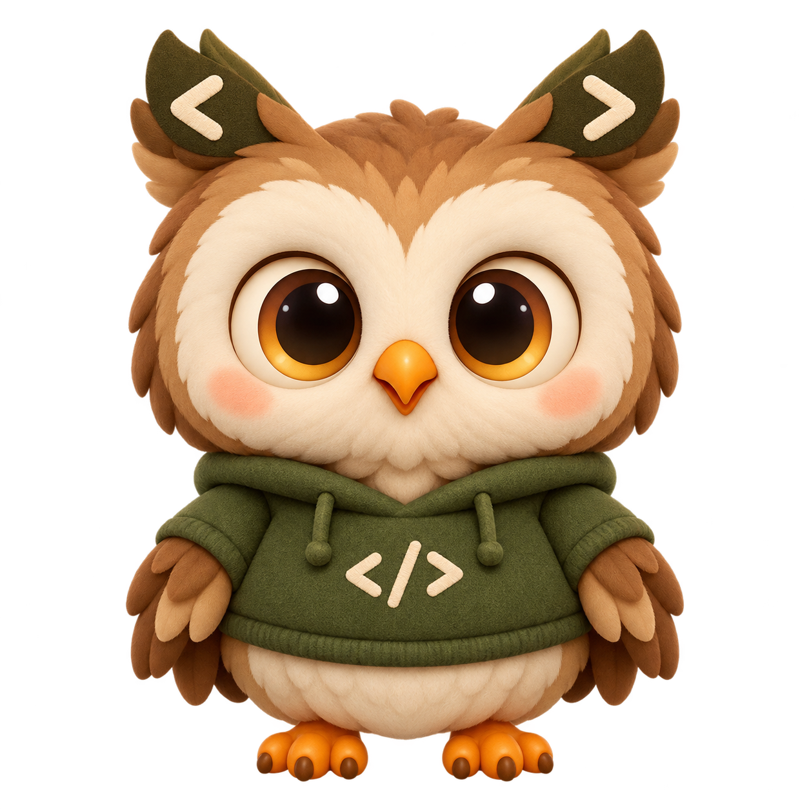

LESS NOISE. MORE CONTEXT.
Just the useful bits.
A cozy companion for your next idea.

Checking desktop…
Your API key and model live in the desktop app.
—Memories in app
—To extract
0Waiting here
Finding your tab…
Hard-blocked sites stay completely off; other pages support no-selection Remember.
Preferences & connectionPair · project · capture
Old chat history is skipped. New AI prompts are saved locally as soon as you send them; completed replies join the same turn. Remember works without selecting text.
Connection settingsPair & choose project
Copy the pairing secret from OwlThread desktop Settings.
Queued captures keep the project selected when captured. Default: General.
Local capture queueReview & clear
Recent app memoriesShared across browsers
Open to load your latest memories.
Connecting to your memory…